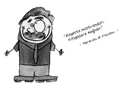

Abraham H. Maslow (1908-1970)
Amerikalı psikolog. Hümanistik psikolojinin kurucularındandır. Yahudi bir ailenin yedi çocuğundan ilkidir. Utangaç ve mutsuz bir çocukluk geçirdiğini söyleyen Maslow, kütüphanelerde kitaplarla ama arkadaşsız büyüdüğünü belirtmiştir. Yalnızlık, aşağılık duyguları, depresyon ve mutsuzluk dolu bir çocukluk ve delikanlılık dönemi geçiren Maslow, nefret dolu ve itici bir kadın olarak gördüğü annesini hiç sevememiş, hatta öldüğünde cenazesine bile gitmemiştir. Sık sık Tanrı’nın kendisini cezalandıracağını söyleyen annesinin tehditlerinin etkisiyle daha küçük yaşta dine güvenmemeye karar vermiş ve sonraları ateist olmuştur.
Maslow, ailesinin ısrarı ile hukuk eğitimine başlamış fakat daha sonra bu eğitimi bırakarak felsefe ve psikoloji okumaya karar vermiştir. Psikoloji hocasından hoşlanmadığı için, bir sömestr sonra o okuldan ayrılmış, New York Şehir Koleji’ne geri dönmüştür. Bu dönemde henüz yirmi yaşında iken kuzeni Bertha ile evlenmiştir. İlginçtir Maslow’un anne ve babası da kuzendir. Maslow evliliğinde sevgi güvensizliği yaşamıştır.
Maslow’da hangi hastalığı arasan vardır; kronik yorgunluk, hipoglisemi, kalça artriti, kalp sorunları, performans anksiyetesi... Mahcup, aşırı anksiyöz ve kendine kızan, mutsuz, izole ruhsal yapısını seneler süren psikanalize rağmen hiç aşamamış, ayrıca hayatı boyunca sıkıldığı her şeyi terk etmiştir.
Maslow’un fikirlerinde maymun davranışlarında gözlediği davranışlar oldukça etkili olmuştur. Örneğin aç ve susuz hayvan önce suya yönelmektedir. Böylece o meşhur ihtiyaçlar hiyerarşisi fikrini geliştirmiştir. Maslow, koşarken geçirdiği kalp krizi nedeniyle ölmüştür.

Ve sosyal güdü Maslow’u döver!
Sosyal güdü Maslow’un fikirlerini çürütür. Çünkü sosyal güdüsü üstün gelen kişi Maslow’un dediği gibi önce fizyolojik ihtiyaçlarını temel alarak davranmaz.
Ünlü sosyolog Emile Durkheim’ın bahsettiği özgeci intihar da Maslow’un fikirlerini çürüten kanıtlardandır. Hindistan’da kadınların, kocalarıyla beraber yanmayı kabul etmeleri, gemisi batan kaptanın onu terk etmeyerek ölmesi, mücadeleyi kaybeden bir askerin kendini vurması, Japonların uyguladığı harakiri örnekleri “özgeci intihar” çeşidine aittir.
Ne demiş Maslow…
• Genellikle en mükemmel olduğumuz anlarda gözümüze çarpan kendimiz olmaktan korkarız.
• Sahip olduğunuz tek şey bir çekiçse, her şeyi bir çivi olarak görmeye başlarsınız.
Neymiş ihtiyaç, dürtü ve güdü…
Bunlar hep birbirine karıştırılan şeylerdir.
İhtiyaç; organizmanın eksikliğini duyduğu şeylerdir. Örneğin yiyecek, su, tuvalet, uyku birer ihtiyaçtır.
Dürtü; organizmanın bu ihtiyacı hissetmesidir. İçten bir şeyler organizmayı dürttüğü için bu adı almış olabilir. Örneğin açlık, susuzluk, uykusuzluk hissetmek birer dürtüdür.
Güdü ya da motiv; organizmanın ihtiyacını gidermek için onu dürtü yönünde harekete geçiren etkendir. Örneğin acıkıp yemek hazırlamak, susayıp mutfağa gitmek birer güdüdür.
Güdüler fizyolojik ve toplumsal olmak üzere ikiye ayrılır. Fizyolojik güdüler genellikle doğuştan gelen, öğrenmeyle kazanılmayan, organizmanın isteklerine bağlı güdülerdir. Mesela açlık, susuzluk, uyku, annelik, cinsellik gibi...
Sosyal güdüler ise fizyolojik güdülere bağlı olarak sonradan ve öğrenmeyle ortaya çıkan güdülerdir. Mesela sevmek, beğenilmek, destek görmek, bağlılık, güvenlik, özgürlük gibi…
Diyelim ki iki seçenek var karşımızda: Yiyecek dilenmek ve aç kalmak… Bunlardan aç kalmaktansa dilenmeyi seçen kişi organizmanın ihtiyacı adına bir seçim yapmıştır yani fizyolojik güdüsü sosyal güdüsüne üstün gelmiştir. Dilenmektense aç kalmayı seçen biri ise içinde bulunduğu ortam, çevre, aile vs. sonucu sonradan öğrendiği gurur, itibar, saygınlık vb. duygular adına aç kalmayı tercih etmiştir. Yani sosyal güdüleri fizyolojik güdülerine üstün gelmiştir.
Türk insanında çoğunlukla sosyal güdüler üstün gelir. Yabancı ülkelere baktığımızda ise genellikle fizyolojik güdülerin üstün geldiğini fark ederiz, özellikle Almanlarda bu durum daha belirgindir. Mesela:
Alman: Aç mısın?
Türk: Yok sağ ol, aç değilim.
Alman: Peki o zaman.
Derin bir açlık ve sessizlikte daha çok duyulan gurultu sesleri...
Ya da:
Türk: Açsındır, ben yemek hazırlayayım.
Diğer Türk: Yok sağ ol, aç değilim.
Türk: Valla olmaz, yiyeceksin!
Diğer Türk: Sağ ol, tokum.
Türk: Hayatta bırakmam, ye!
Diğer Türk: İnan tokum.
Türk: İnanmam, yiyeceksin.
Diğer Türk: Evden yiyip çıktım.
Türk: Evden çıkalı kaç saat oldu, ölümü öp bak, yemeden bırakmam.
Diğer Türk: Yahu bizim ev buraya iki dakika.
Türk: Yemin verdim yiyeceksin.
Diğer Türk: İyi yiyeyim bari bir parça.
Türk: Öyle bir parçayla olmaz, bak çoluk çocuğunun ölüsünü öp ki bir tabak daha.
Derin bir şişlik ve sessizlikte daha çok hissedilen tuvalet ihtiyacı...